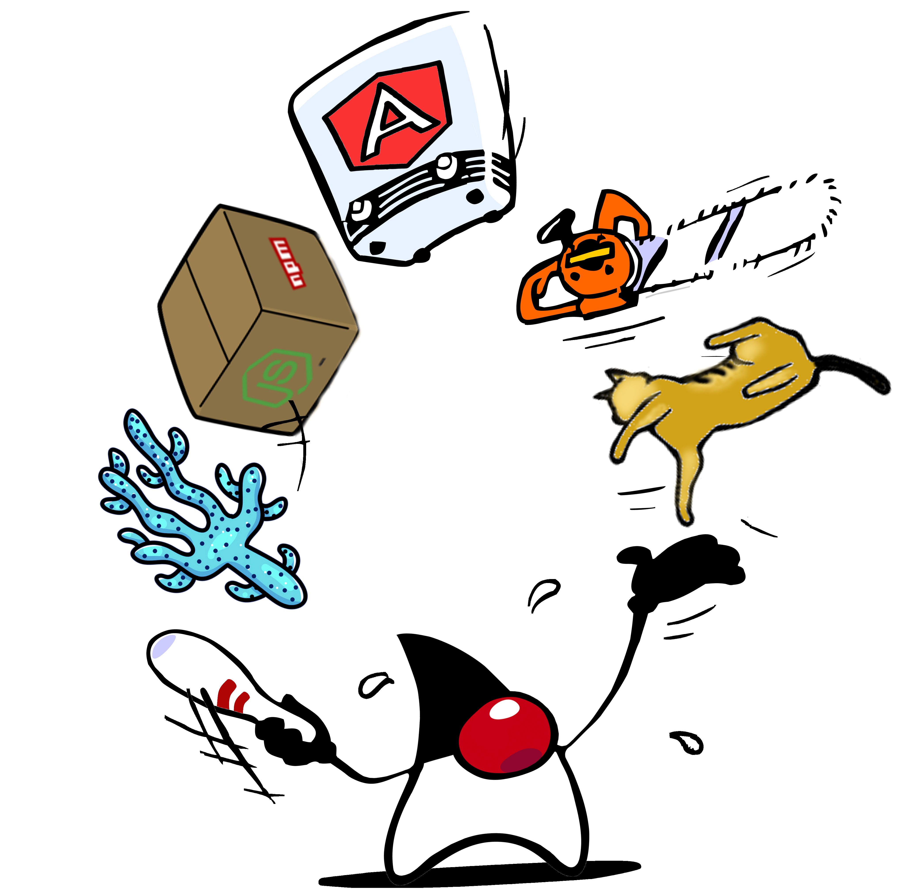
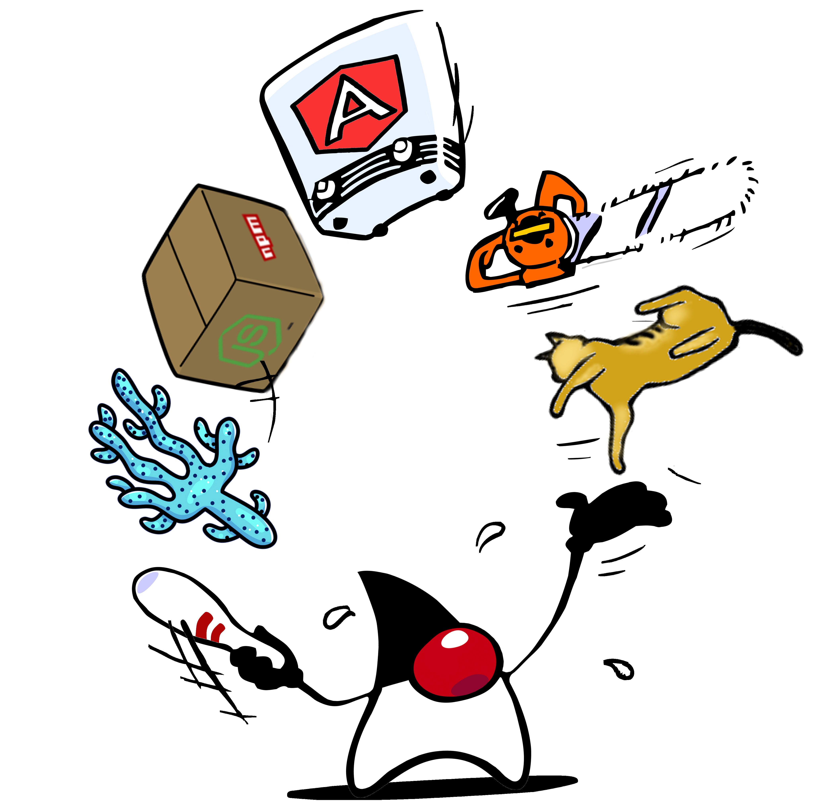
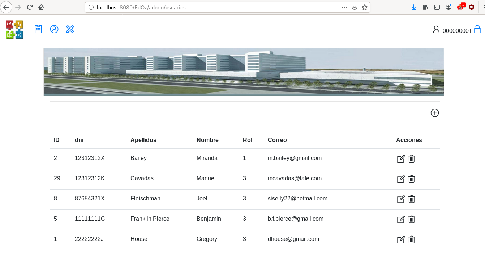
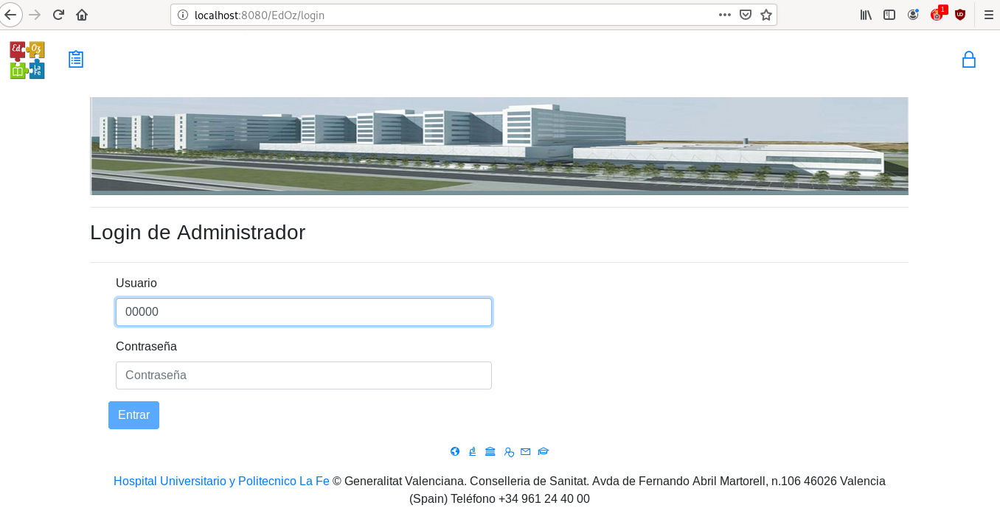
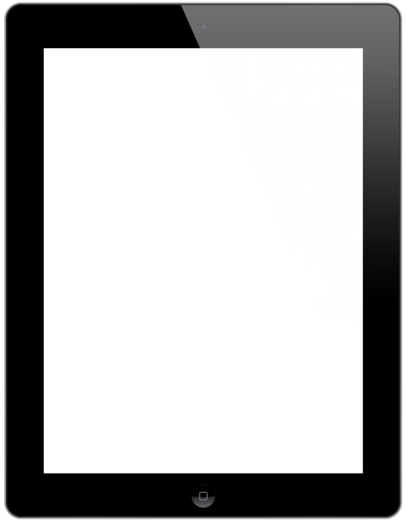
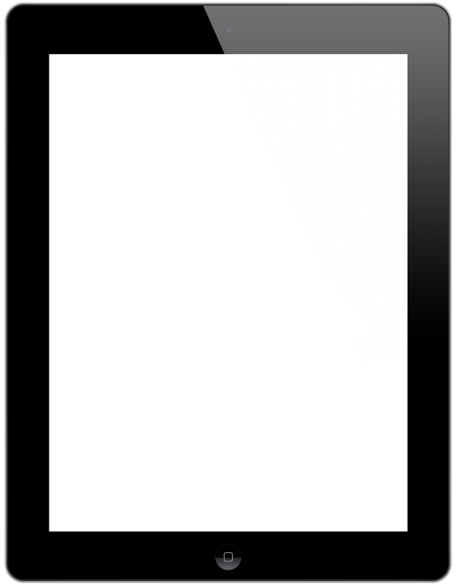
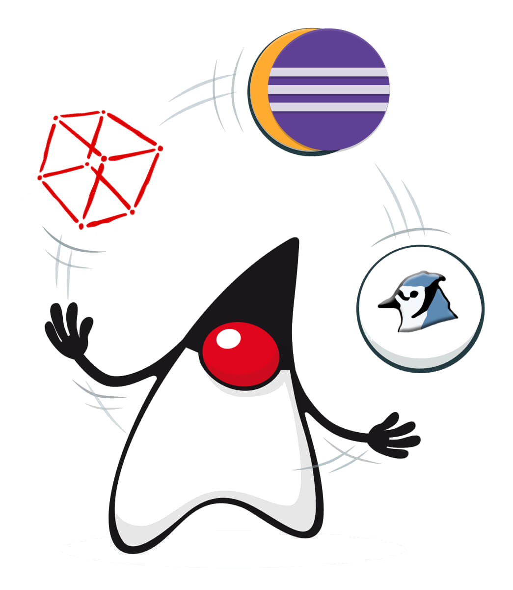
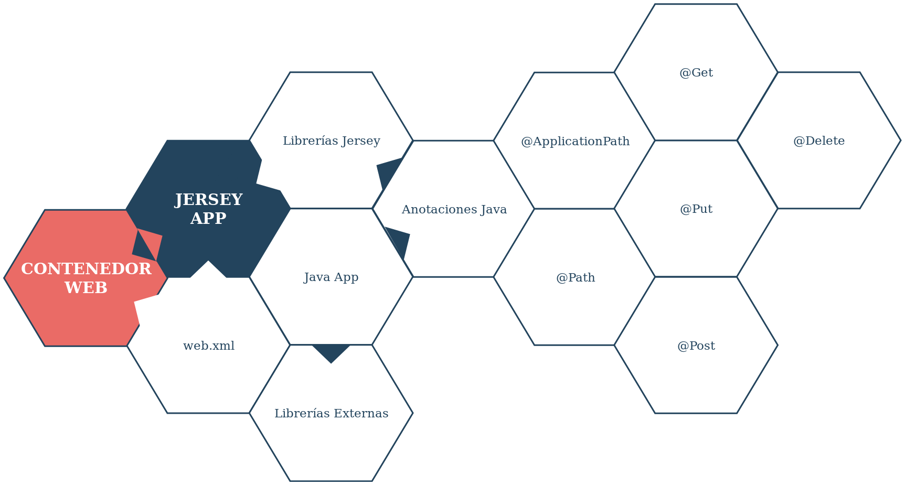
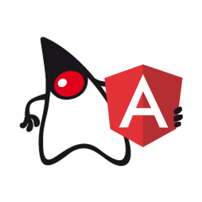

EdOz
REST server and Web Client

 
Multiplatform development Project by
Lucas Cerveró Beltrán. Pau Villanueva as mentor

Multiplatform development Project by
Lucas Cerveró Beltrán. Pau Villanueva as mentor
The Project
The hospital needs an intranet course platform system for the helthcare professionals.

Because of security and data protection, the hospital take the decission of build its own solution. It's not a good idea to use a propietary software.
Goals
The application must help healthcare professionals to create courses that they impart later in the classroom. The app must help them to admin, and attach a survey to the courses.
The software also must help the students, to find, sing in and get informed about hospital courses in an easy way.

Design
Must accomplish this minimums
- Diferent kinds of users and roles  
- Must be a Multiplatform app
- Must fit in the hospital technological ecosystem.


 

Architecture
The Client and the Server must be structured in a correct way.
If we made this task wrong, we can create big errors. To avoid it we'll use software patterns.

Server software patterns
The server was structured by independent layers. Each layer interact only with the above and below layer.
The REST API
This communication pattern it's used to define the system implementation of nets and distributed systems.
It's very used today and it's based on CRUD applications that use http protocol.
DAO
It's an Object Data Access, a component that brings us a common interface and oneo or more data sotorage devices.
They are used to isolate the persistence technology layer from the application.
The data model
The hospital's technological ecosystem make us to use the relational data model.
We design the next schema ...

The final Server Structure

Client features
(Web)
To build the User Interface, we choose to accomplish different requirements.
For the Front-End we try ...
Reuse elements
Allowing a more flexible and quick development.
Reuse the code in different aplications, made the UI design consistent between apps.
We'll use Web Components to accomplish this goalOrder and scalability
The client structure must permit an easy scalability of the app.
The addition of new parts must be as much independent as possible and not interfere with the already created code.
We use frameworks, modules and data tree structures to get the objective.Platform Flexibility
Must be easy to move the app to any device, even if it doesn't have a web browser.

Developmnet environment
Backend
To build the backend we use this tools

Open JDK
The Java "Open Source" SDK.
 Web
Web
Eclipse IDE
Powerfull development environment with lots of tools integrated.
 WebApache Tomcat Server
A web container with servlet and JSPs support.
WebPostgre SQL
A free and Open Source Relational Database Management System.
 Web
Web
Libs
We use this libs to develop the Server.
REST/JAX-RS implementation: JERSEY
JSON serialization: GSON
smtp email: JavaMail

REST service code example
With Jersey we can build a REST node very easily.
import javax.ws.rs.*;
import es.gva.san.lafe.edoz.app.*;
@Path("/rest")
public class PublicAPI {
@Path("/test")
@GET
@Produces({"application/json"})
public String getTest() {
// conexión con nuestra aplicación
String pattrn = "{ \"wooow\":\"%s\"}";
return String.format(pattrn , miAppGetResults());
}
}
App Structure
At the end, the (servlet) app with Jersey get this shape.
Development environment
Frontend
To build the client we use this tools.

Nodejs
The execution engine.
Execute JavaScript code outside the browser. It's equivalent to an interpreted language. It was used to run the framework and tools.
echo 'console.log("Hola mundo con JavaScript");' | node
>> Hola mundo con JavaScript
npm
Node package manager, to admin libs and dependencies.
Like "make" does with C language.
Rules:
npm <command>
npm <command> -h quick help on <command>
npm -l display full usage info
npm help <term> search for help on <term>
npm help npm involved overview
Libs
To build the client we use these packages
Form builder and checker: @angular/forms
Navigation admin: @angular/router
Graph creation: @swimlane/ngx-charts
CSS clases to adapt the view to the screen: bootstrap
Angular 2
It's the framework choosed to build "SPA" apps. (Single Page Aplications)
It gives us a bunch of tools to help us to build, ninify and test this apps.
Angular CLI
A console line interface used to automating tasks.
ng generate component miprimercomponente
It uses webpack in background and can build very complex projects.
ng build --prod --base-href ./
Component Structure
Angular take advantage of TypeScript capabilities to implement static types to build our frontend app.
Import { Component} from '@angular/core';
@Component({
selector: 'cursos',
template:
`<h3>{{titulo}}</h3>
<ul>
<li *ngFor="let curso of cursos">
{{ curso }}
</li>
</ul>` })
export class CursosComponent{
titulo: string = “Lista de cursos”;
cursos: string[] = [“curso1”,”curso2”,”curso3”]
}
Vs Codium
It's a Fork of VS Code and brings intellisense capabilities for TypeScript.
It has an embedded terminal too.
That's why people reffers it as the Web IDE.


App demos
Now, we'r going to see a video demo of the app running.

Video in Spanish

Resources
Links, reference books and other sources.

The Project itself
| Project's report (only in spanish) | Video | API's documentation | Technology analysis (only in spanish)|Web resources
| Abastos | La Fe | Autor | Open JDK | Eclipse | Tomcat | Postgre SQL | Jersey | Gson | JavaMail | Node.Js | Npm | TypeScript | Angular | Ng Forms | Ng Router | Angular CLI | Ngx Charts | VsCodium |Bibliography I
Angular 2 From Theory To Practice. Hussain Asim. 2016. S.P. S.ISBN
The Complete log4j Manual. Ceki Gülcü. 2002. S.P. S.ISBNBibliography II
Data Visualization with JavaScript. Stephen A. Thomas. 2015. USA. ISBN-10: 1-59327-605-2, ISBN-13: 978-1-59327-605-8 Apache Tomcat's Documentation. S.F. The Apache Software Foundation. https://tomcat.apache.org/tomcat-9.0-doc/ Q&A forums about Java, TypeScript, Angular 2 y Apache Tomcat. S.F. StackOverflow. https://stackoverflow.com/questions Eclipse's Documentation. 2019. Eclipse Foundation. https://help.eclipse.org/2019-12/index.jsp Angular's Documentation. S.F. Google. https://angular.io/docs/ Online and terminal Linux man pages. S.F. Linux. https://linux.die.net/man/Iframes
The following slides show integrated links and resources used in the presentation.
Project's Report
Technology analysis
postgre SQL
If this webage doesn't admit iframes, click this link to visit